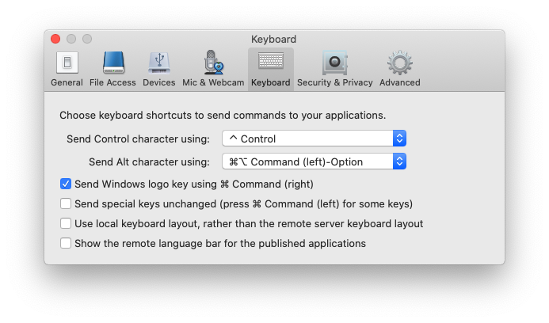

Map Apple modifiers (Ctrl, Option, Command) to Windows modifiers (Ctrl, Alt, Windows or Ctrl, Windows, Alt) in Citrix Receiver & Workspace, with working Alt+Tab and Windows key shortcuts.
For whatever reason, Citrix Receiver/Workspace MacOS client has only limited settings to map Alt and Windows keys, motivating the need for this modification.
Example Citrix Workspace (2005) settings that work with this configuration: 
References